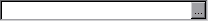

(field, width = 10)
Displays the specified field with an ellipsis button attached to the right side.
For example:
Window(ChooseField('Field'))

Abstract base class for: ChooseDateTimeControl, ChooseManyControl, ChooseMonthDayControl, ChooseTwoListControl, ChooseYearMonthControl